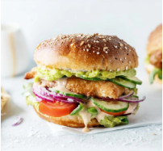

- Registreer in 1 minuut
- Recepten bewaren
- Exclusieve content en aanbiedingen
- Gratis e-books
Oesterzwamburgers met jalapeños
Deze oesterzwamburgers met jalapeños zijn lekker crispy, spicy en helemaal vegetarisch. Perfect voor wie zin heeft in een snelle, smaakvolle burger met een spicy twist.
15 min. voorbereidingstijd
Direct naar receptFoto van het gerecht
Over de chef

Bibi Loomans
"Maak het extra smeuïg met een plak cheddar of voeg wat avocado toe voor een frisse tegenhanger van de spicy saus!"
Ingrediënten
Voor 4 personen
- 100 g bloem
- 1 tl paprikapoeder
- 1 tl uienpoeder
- 2 eieren
- 100g cornflakes
- 4 hamburgerbroodjes
- 250g oesterzwammen
- 4 eetlepels kwark
- 2 eetlepels chipotle mayonaise
- 12 jalapeños in pot + sap
- ijsbergsla
Bereidingswijze
Oesterzwamburgers met jalapeños
- Meng de bloem met de specerijen en breng op smaak met peper en zout. Doe dit in een diep bord. Kluts de eieren in een ander diep bord. Verdeel de cornflakes in een derde diep bord.
- Wentel de oesterzwammen nu één voor één eerst door het bloemmengsel, gevolgd door het ei en als laatste de cornflakes.
- Bak de oesterzwammen krokant in een laagje olie in een koekenpan op middelhoog vuur.
- Maak de saus door de kwark en chipotle mayonaise door elkaar te mengen.
- Snijd de helft van de jalapeños fijn en meng door de saus samen met 2 eetlepels van het sap.
- Snijd de broodjes open en rooster ze aan de binnenkant.
- Snijd de ijsbergsla fijn. Beleg de broodjes met de saus, fijngesneden sla, extra jalapeños en de oesterzwamburger.
DIT RECEPT BEWAREN?
Maak een 24Kitchen account aan en bundel al jouw favoriete recepten met een druk op de knop.
Maak een account aan